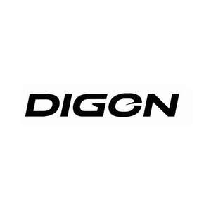

Trade Mark Journal No.2026/011 13 March 2026
UK00004340297 13 February 2026 (9)

- Class 9
- Batteries; Batteries, electric; Battery boxes; Battery cables; Battery cases; Battery charge devices; Battery chargers; Battery chargers for use with telephones; Battery packs; Computer cables; Computer hardware; Computer peripheral devices; Computer keypads; Computer memory devices; Computer monitors; Fire alarms; Fire detectors; Smoke detectors; Fire blankets; Fire extinguishers; Fire sprinklers; Fire [1] extinguishing systems; Glasses for sports; Loudspeaker cabinets; Loudspeaker systems; Loudspeakers with built in amplifiers; Loudspeakers; Headphones; CD players; Microphone cables; Modules for photovoltaic power generation; Display modules for mobile phones; Display modules for television receivers; Microphone stands; Microphones; Mounting brackets adapted for computer monitors; Mounting devices for cameras; Mounting racks for computer hardware; Mounting racks for telecommunications hardware; Dashboard mounts for mobile phones; Mounting fittings for radios; Wall mountings adapted for television monitors; Warning loud speaker apparatus for mounting on the roof of emergency services vehicles; Time clocks [time recording devices]; Time recording apparatus and instruments; Chronographs [time recording apparatus]; Time and date recording apparatus; Time switches; Time switches, automatic; USB cables; USB Dongles [Wireless network adapters]; USB cables for cellphones; USB chargers for electronic cigarettes; USB flash drives; USB hardware; USB hubs; USB modems; USB port cards; USB readers; Baby scales; Calculating scales; Cases adapted for mobile phones; Cell phone cases; Cell phone covers; Cell phone battery chargers; 3D eye glasses; Safety glasses for protecting the eyes; Devices for hands-free use of mobile phones; Digital signs; Downloadable ring tones; Downloadable graphics for mobile phones; Electric signs; Electrical storage batteries; Electronic sound pickups for guitars and basses; Electronic audio signal processors for compensating sound distortion in speakers; Electronic effect pedals for use with sound amplifiers; Electronic signs; Luminous signs; Road signs [luminous]; Flip covers for smart phones; Sleeves for laptops; Electrical coupling sleeves; Hands free devices for mobile-phones; Head-mounted video displays; Headsets for mobile telephones; Hands-free headsets for cell phones; Headsets; Keyboards for mobile phones; Mobile phones; Alarms; Solar batteries; Solar-powered rechargeable batteries; Speakers; Sports glasses; Gyro sensors using GPS functions; MP3 players; Laptops [computers]; Personal digital assistants; Remote controls; Weighing scales; Smartwatches; Stands adapted for mobile phones; Tachographs; Video recorders; Sound recording carriers; Rechargeable batteries; Projectors; Ski glasses; Bags adapted for laptops; Covers (Shaped -) for computers; Smart phones; Liquid crystal protective films for smartphones; Mobile telephone cases made of leather or imitations of leather; Tablet covers; Leather cases for tablet computers; Virtual reality glasses; Theft prevention installations, electric; Computers; Peripheral devices (Computer -); Computer programs [downloadable software]; Data processing apparatus; Time recording apparatus; Weighing apparatus and instruments; Scales; Signal lanterns; Electric navigational instruments; Electronic animal identification apparatus; Cabinets for loudspeakers; Amplifiers; Earphones for smartphones; Car stereos; Monopods used to take photographs by positioning a smartphone or camera beyond the normal range of the arm; Cameras [photography]; Measuring apparatus and instruments; Counters; Baby monitors; Cash registers; Chip card readers; Colour document printers; Digital colour printers for documents; Document printers for computers; Document printers for use with computers; Ink jet document printers; Ink-jet color printers for documents; Laser color printers for documents; Laser document printers; Dog whistles; Downloadable music files; Dust protective goggles; Dust protective masks; Electric locks; Electric locks for vehicles; Electrical plugs; Electrical sockets; Electronically encoded identity wristbands; Fire extinguishing apparatus; Frequency converters; Galvanic cells; Global positioning system (GPS) apparatus; Integrated circuits; Interactive touch screen terminals; Light emitting diodes (LEDs); Lactodensimeters; Magnifying glasses; Microscopes; Modems; Notebook computers; Optical apparatus and instruments; Pedometers; Personal stereos; Photocopiers; Phototelegraphy apparatus; Portable media players; Protective films adapted for computer screens; Punched card machines for offices; Rechargeable electric batteries; Set-top boxes; SIM cards; Slide projectors; Smartglasses; Sound reproduction apparatus; Sound transmitting apparatus; Stands adapted for tablet computers; Stands for photographic apparatus; Telescopes; Tool measuring instruments; Transparency projection apparatus; USB card readers; Bags for cameras and photographic equipment; Computer mouse; Electronic book readers; Electronic card readers; Gloves for protection against accidents; Electronic components for integrated circuit cards; Mouse pads; Security surveillance robots; Teaching robots; Transmitters of electronic signals; Tripods [for cameras]; Wearable activity trackers; Routers; Routers for routing audio, video, and digital signals; Computer network routers; Network routers; USB wireless routers; Wide area network (WAN) routers; Wireless routers; Charging appliances for rechargeable equipment; Mobile telephone batteries; Battery charging equipment; Ignition batteries; Solar panels for electricity generation; Wireless chargers; Adjustable desktop mounts for tablet computers; Video cameras adapted for monitoring purposes; Remote monitoring apparatus; Annunciators; Computer operating programs; Cell phone battery chargers for use in vehicles; Alarm systems; Automatic indicators of low pressure in vehicle tires; Car video recorders; Radio frequency identification devices; Electronic publications; Hands-free holders for cell phones; Downloadable computer game programs; Karaoke machines; Protective glasses; Ski goggles.
LECEN Inc.
Representative: SMART IP LTD